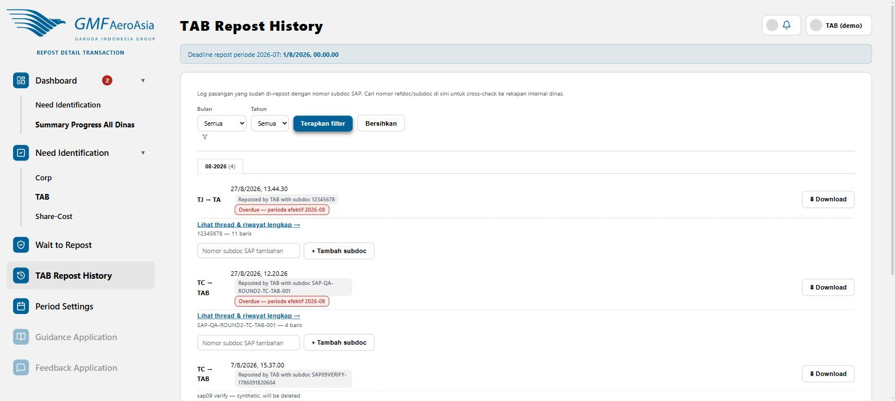

Log lengkap semua pasangan yang sudah direpost, lintas semua dinas
rdt/repost-history

- Berbeda dari Repost History milik PIC, di sini TAB melihat riwayat seluruh dinas, bukan cuma dinas sendiri.
- Kalau satu pasangan dinas sempat terpecah jadi beberapa file SAP (kasus >300 baris), gunakan kolom Nomor subdoc SAP tambahan + tombol + Tambah subdoc untuk mencatat nomor subdoc dari file kedua, ketiga, dst.
- Klik Download untuk mengunduh ulang file Format TAB yang sudah pernah diposting sebelumnya (untuk verifikasi ulang).